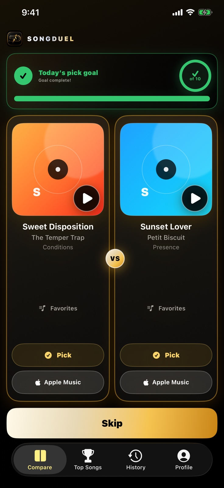
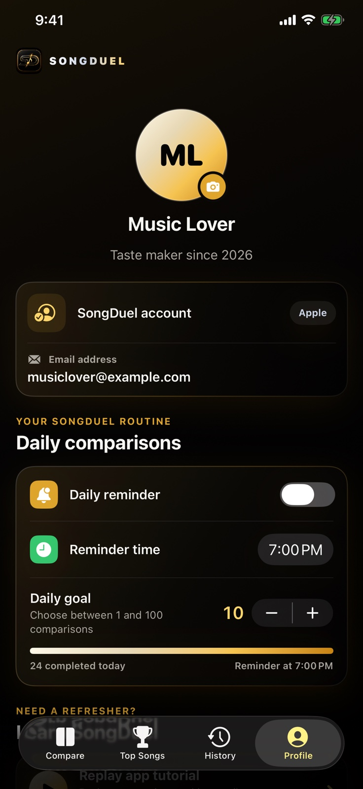

01
Connect your library
Bring in songs from your Apple Music library and playlists. SongDuel builds one ranking across your connected collection.
SongDuel turns instinctive, head-to-head choices into a living ranking of the music you already love.

No star ratings. No endless sorting. Just two songs and one honest decision at a time. SongDuel does the math, so your true favorites naturally rise.
SongDuel learns from what feels natural: choosing the song you would rather hear right now.
Bring in songs from your Apple Music library and playlists. SongDuel builds one ranking across your connected collection.
Tap either song card. During the short confirmation, tap again to cancel, switch your choice, or skip the matchup.
Top Songs and History unlock after three picks. Your evolving Top 10 gets more confident as the evidence grows.
Tap the song you want to hear. SongDuel’s Elo-based ranking adjusts to the strength of every matchup—not just raw win counts.
Choose a track to see your ranking react.
A clear view of what is rising, what is lasting, and how your taste changes over time.
See your best estimate after the first few picks, then watch it gain confidence at clear milestones as you keep comparing.
See the songs and signals shaping your taste, then move through daily, monthly, and yearly snapshots of your ranking.
Set a daily comparison goal, choose an optional reminder, and keep every account and learning control close at hand.

Sign in with Apple protects your SongDuel account. Apple Music permission is separate and revocable. Your picks work offline first and sync securely to your account.
Each head-to-head pick updates both songs with an Elo-style rating. Your evolving Top 10 appears after a three-pick warm-up, with confidence milestones for the Top 3 at 250 picks, Top 6 at 500, and Top 10 at 1,000.
SongDuel’s current release is built around Apple Music. Some playback and library features depend on Apple Music availability, an active subscription, and Sync Library.
No. Apple Music listening activity is shown separately and without rank numbers. Only your head-to-head SongDuel picks determine your evolving Top 10.
Yes. From Profile you can clear app data without deleting your account, disconnect Apple Music, log out, or permanently delete your SongDuel account and associated cloud data.
SongDuel is being prepared for launch. Check back here for release updates.
Designed for iOS 17 and later.